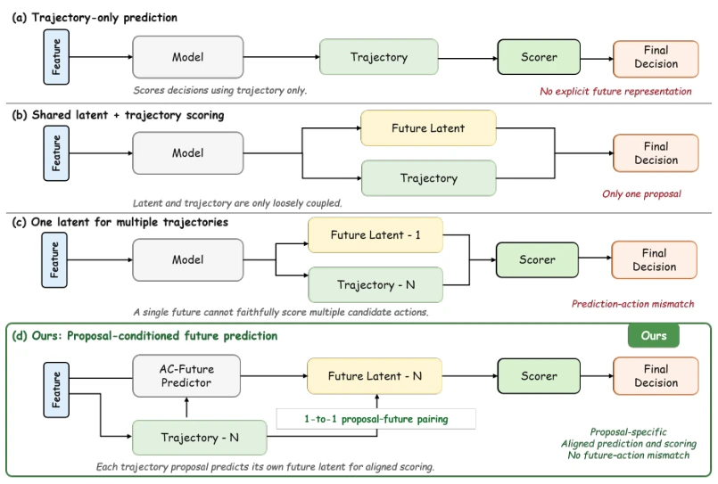
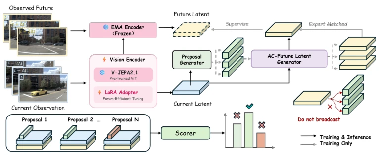
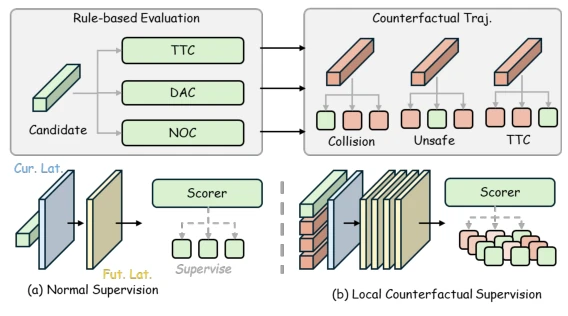
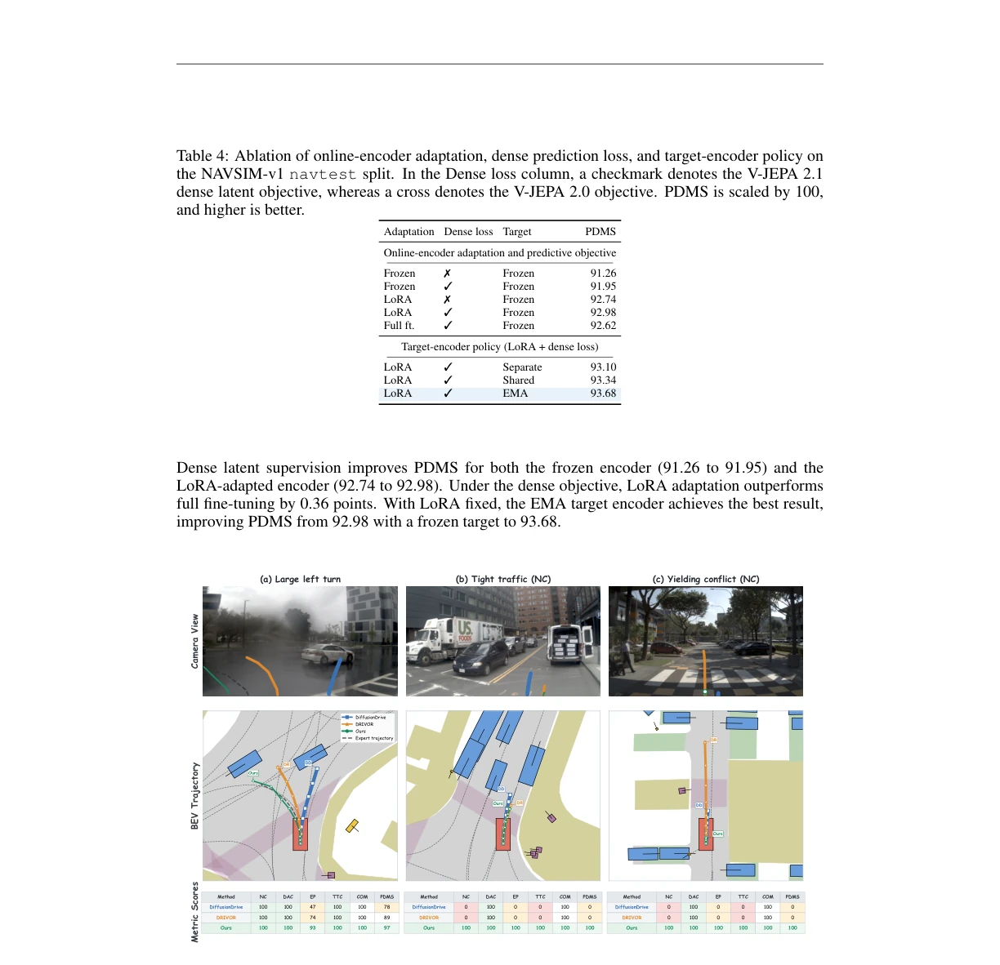

DA-WAM: Decision-Aligned Future Latents for Driving World Models
Ruiguo Zhong, Benshan Ma, Xiaolong Chen, Lang Zhang, Mingyue Feng, Yaonong Wang abspdf
论文点评Review
这篇论文给自动驾驶世界模型泼了盆冷水，也递了把梯子。虽然标题听着高大上，核心其实就一件事：别把未来预测和规划割裂开。现有的世界模型要么预测了未来却不用来打分，要么所有轨迹共享同一个未来，导致决策时“张冠李戴”。DA-WAM 强行把每个候选轨迹和它独有的未来潜变量绑定，让打分器能看清“如果我走这条路，后果是什么”。虽然还是基于离线日志，但至少在 NAVSIM 上刷到了 SOTA，算是给“预测即决策”的口号补了块砖。不过，LoRA 微调加 EMA 目标这种套路，在 V-JEPA 上玩得不算新鲜，真正的挑战在于硬负样本的构建是否泛化。此外，推理阶段完全依赖在线编码器，意味着训练时的稳定性保障在部署时不复存在，这在实际长尾场景中可能带来隐患。
This paper pours cold water on autonomous driving world models and also offers a ladder. Although the title sounds impressive, the core is actually one thing: do not separate future prediction and planning. Existing world models either predict the future but do not use it for scoring, or all trajectories share the same future, leading to "misattribution" during decision-making. DA-WAM forcibly binds each candidate trajectory to its unique future latent variable, allowing the scorer to see clearly "what are the consequences if I take this path". Although still based on offline logs, it at least achieved SOTA on NAVSIM, adding a brick to the slogan "prediction is decision". However, the routine of LoRA fine-tuning plus EMA targets is not novel on V-JEPA; the real challenge lies in whether the construction of hard negative samples generalizes. Furthermore, the inference stage relies entirely on the online encoder, meaning the stability guarantee during training no longer exists at deployment, which may bring risks in actual long-tail scenarios.
研究动机Motivation
自动驾驶规划的核心在于预判动作后果，但现有世界模型往往未能将预测与决策紧密耦合。例如 DriveWorld (Min et al., 2024) 和 LAW (Li et al., 2025b) 主要利用未来动态增强场景表征，预测预训练与规划优化阶段分离，导致编码器无法适应轨迹评分需求。Drive-WM (Wang et al., 2024) 虽将预测引入规划，但预测状态常被共享或池化，削弱了动作与后果的对应关系。这种“预测 - 动作不匹配”使得评分器难以区分几何相似但安全结果不同的轨迹。此外，Drive-JEPA (Wang et al., 2026c) 等方法虽尝试微调，但往往在测试时丢弃动态分支。DA-WAM 旨在解决这一痛点，确保每个候选轨迹都有专属的未来预测，使决策直接基于动作特定的后果，而非仅依赖几何特征。
The core of autonomous driving planning lies in anticipating action consequences, but existing world models often fail to tightly couple prediction and decision-making. For example, DriveWorld (Min et al., 2024) and LAW (Li et al., 2025b) mainly utilize future dynamics to enhance scene representation, separating prediction pre-training and planning optimization stages, resulting in encoders unable to adapt to trajectory scoring needs. Drive-WM (Wang et al., 2024), although introducing prediction into planning, often shares or pools predicted states, weakening the correspondence between actions and consequences. This "prediction-action mismatch" makes it difficult for scorers to distinguish trajectories that are geometrically similar but have different safety outcomes. Furthermore, methods such as Drive-JEPA (Wang et al., 2026c) attempt fine-tuning but often discard the dynamic branch during testing. DA-WAM aims to solve this pain point, ensuring each candidate trajectory has a dedicated future prediction, enabling decisions to be based directly on action-specific consequences rather than relying solely on geometric features.

Figure 1: Prediction–action alignment in trajectory scoring. (a) Trajectory-only prediction pro- vides no explicit future representation to the scorer. (b) Loosely coupled latent fusion incorporates a future representation but generates only a single trajectory proposal, precluding candidate-specific future comparison. (c) Sharing one future latent across multiple candidates creates a prediction– action mismatch. (d) DA-WAM predicts a distinct future latent for each candidate and scores the trajectory with its corresponding latent, establishing a one-to-one trajectory–future correspondence.
The DA-WAM framework comprises three core steps. First, the online encoder extracts current scene latent variables, cooperating with the EMA target encoder to provide stable supervision, utilizing LoRA to adapt the V-JEPA 2.1 backbone. Second, the action-conditioned predictor generates unique future latent states for each candidate trajectory, fusing action and scene information through a query-key-value mechanism, rather than sharing a global future. Finally, the future latent variable conditioned scorer evaluates the triplet (current scene, action, predicted future), outputting planning factors and utility scores. During training, dense prediction loss is applied only to expert-matched trajectories, while other trajectories are optimized through planning loss. Safety-critical hard negative samples are introduced to enhance boundary discrimination, utilizing rule-generated NC, DAC, and other factors as supervision. During inference, the target network is removed, retaining only online components. This design ensures future representations evolve with the task, and each trajectory has corresponding counterfactual evidence, avoiding the separation of prediction and decision-making.

Figure 2: Overview of DA-WAM. The online encoder Eθ first maps the current observation Xt to scene tokens Zt. For each candidate trajectory τi, its action representation ai is combined with Zt via the predictor Pϕ to forecast a candidate-specific future latent state bZi. A shared scorer Sψ then evaluates the triplet (Zt, ai, bZi) to predict interpretable planning factors bqi and an overall utility score bsi. Training: An EMA target encoder extracts target latents Zt+∆from the observed future frame to supervise only the expert-matched prediction, while safety-critical hard negatives enhance boundary discrimination. Inference: Only the online encoder, predictor, and scorer are activated, requiring no future observations or expert priors.

Figure 3: Safety-critical hard-negative trajectory supervision. Conventional training evaluates a sparse set of generated candidates using rule-based NC, DAC, and TTC factors. DA-WAM ad- ditionally retrieves expert-proximate hard-negative trajectories that are geometrically similar to the expert trajectory but differ in safety outcomes. Generated candidates and hard negatives query the same scene representation and share one future-latent-conditioned trajectory scorer. Hard-negative labels are training-only planning targets rather than observed future representations.
Extensive evaluation was conducted on NAVSIM-v1 and v2. DA-WAM achieved 93.7 PDMS on NAVSIM-v1, surpassing baselines such as DiffusionDrive and DrivoR. Ablation studies indicate that action-conditioned future prediction outperforms shared global future (93.46 vs 92.81 PDMS), and introducing safety-critical hard negative samples further improved performance. Qualitative results show that in narrow traffic and yielding conflict scenarios, DA-WAM can avoid collisions and TTC failures. Although hard negative samples rely on offline trajectory libraries, the overall framework demonstrates the effectiveness of aligning prediction and decision-making. Experiments also found that performance saturates when the number of candidate trajectories is 32, with limited gains from further increases. These results validate DA-WAM's advantages in balancing safety and traffic efficiency, providing a new paradigm for end-to-end planning.

Figure 4: Qualitative comparison of trajectory selection. Camera views (top), BEV trajectories (middle), and per-scene metric scores (bottom) are shown for (a) a large left turn, (b) tight traffic, and (c) a yielding conflict. The trajectories produced by DiffusionDrive, DrivoR, and DA-WAM are shown in blue, orange, and green, respectively, with the expert trajectory shown as a dashed line. In (a), DA-WAM more closely follows the expert trajectory and achieves the highest EP and PDMS scores. In (b) and (c), DA-WAM avoids the conflicts that lead to NC and TTC failures for both baselines.